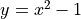
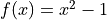
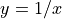
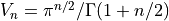
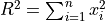

GSL Shell introduction¶
GSL Shell is an interactive interface that gives access to the GSL numerical routines using Lua, an easy to learn and powerful programming language. With GSL Shell, you can directly access the functions provided by the GSL library without the need to write and compile a stand-alone C application.
In addition, the power and expressiveness of the Lua language enables you to develop and test complex computations involving data and mathematical calculations. You will be also able to create plots in real-time using the powerful built-in graphical module.
The underlying programming language, Lua, itself is a very cleverly designed programming language. It is therefore an excellent platform for programming. In addition the LuaJIT2 implementation provides excellent execution speed that can be very competitive with compiled C or C++ code.
Since GSL Shell is oriented toward mathematics it does use an optional simplified syntax to express simple mathematical functions (see short function syntax). Otherwise the syntax and the semantic of the Lua programming language is completely ensured.
First steps¶
The most basic usage of GSL Shell is just like a calculator: you can type any expression and GSL Shell will print the results. GSL Shell is designed to work mainly with floating point numbers stored internally in double precision. Sometimes we will refer to these kind of numbers as a real number, as opposed to a complex number.
For integer numbers, GSL Shell differs from many other programming environments because it does not have a distinct type to represent them. In other words, integer numbers are treated just like real numbers with all the implications that follow.
To give the flavor of GSL Shell let us suppose that we want to plot a simple quadratic function like . You can define the function very easily:
>>> f = |x| x^2 - 1
>>> f(2)
3
So the first line means: let f be a function that given a value x returns .
This kind of notation for simple functions is an extension to the Lua syntax and is explained in a specific section about the short function notation.
Now you may want to plot the function f. This is done very easily:
>>> p = graph.fxplot(f, -3, 3)
To obtain the following plot:
Since the plot looks a little bit empty we can try to add at least a title:
>>> p.title = 'Function plot example'
You have probably noted that we have kept a reference to the plot in a variable named “p”. It is actually important to keep a reference to the plot to be able to make further modifications.
In case you forgot the assignement to a variable you can still retrieve the last returned expression using the special variable name “_”. So for example if you type:
>>> graph.fxplot(f, -3, 3)
<plot: 0xb770eed8>
The plot is still available using the special variable “_”:
>>> _
<plot: 0xb770eed8>
Now let us suppose that we want to add to the same plot another curve to represent the function .
In this case we don’t want to create another plot, but we need to create a “curve”.
We can do that by using the function graph.fxline() that works eaxctly like graph.fxplot() but it does return a graphical object instead of a plot.
Once the curve is created we add it to the plot using the method addline().
>>> line = graph.fxline(|x| 1/x, 1/8, 3)
>>> p:addline(line, 'blue')
If you bother to add also the other side of the hyperbole you will obtain the following plot:
At this point you can also add a legend. This can be done with a couple of more commands:
>>> p:legend('parabola', 'red', 'line')
>>> p:legend('hyperbole', 'blue', 'line')
To obtain the following plot:
As you can see the graphical system is very flexible and it does offer a lot of possibilities. If you want to learn more about the graphical system you can read the chapter about graphics.
Getting Help¶
When you are using GSL Shell interactively you get easily help about any function by using the function:
help(some_function)
to obtain a short text that explain what the function does and the arguments that it gets. If the arguments are enclosed in square bracket it means that these arguments are optional.
Complex numbers¶
When you need to define a complex number you can use a native syntax like in the following example:
x = 3 + 4i
The rule is that when you write a number followed by an ‘i’ it will be considered as a pure imaginary number. The imaginary number will be accepted only if the ‘i’ follows immediately the number without any interleaving spaces. Note also that if you write ‘i’ alone this will be not interpreted as the imaginary unit but as the variable ‘i’. The imaginary unit can be declared by writing ‘1i’, because the ‘1’ at the beginning forces the interpreter to consider it as a number.
All the functions in math such as exp, sin, cos etc. work on real numbers.
If you want to operate on complex numbers, you should use the functions defined in the complex module.
The other important mathematical types in GSL Shell are matrices, either of complex or real numbers. In addition, Lua offers a native type called “table”. This latter is very useful for general purpose programming because it can store any kind of data or structures. However, you should be careful to not confuse Lua tables with matrices. You can work with both types as far as you understand the difference and use the appropriate functions to operate on them.
Most of the GSL functions operate on real or complex matrices because of the nature of the GSL library itself.
A couple of useful tricks¶
When you are working in an interactive session, GSL Shell will always remember the last result evaluated. You can access its value using the global variable “_”. When you evaluate a statement or an expression that returns no values, the variable “_” is not modified.
Another useful thing to know is that you can suppress the returned value by adding a ‘;’ character at the end of line. This can be useful to avoid to show a large table or matrix if you don’t want to see them on the screen.
Working with matrices¶
In order to define a matrix you have basically two options: you can enumerate all the values or you can provide a function that generates the terms of the matrix.
In the first case you, should use the matrix.def() like in the following example:
use 'math'
th = pi/8 -- define the angle "th"
-- define 2x2 rotation matrix for the given angle "th"
m = matrix.def {{cos(th), sin(th)}, {-sin(th), cos(th)}}
You can remark that we have used the matrix.def() function without parentheses to enclose its arguments.
The reason is that, when a function is called with a single argument which is a literal table or string, you can omit the enclosing parentheses.
In this case we have therefore omitted the parentheses because matrix.def() has a single argument that is a literal table.
Note that in our snippet of code we have used the function use() to make the functions in the module math available.
If you don’t use use(), the function math.sin() and math.cos() should be accessed by explicitly specifying the math namespace.
You can also define a column matrix using the function matrix.vec() as follows:
v = matrix.vec {cos(th), sin(th)}
The other way to define a matrix is through the matrix.new() function (or matrix.cnew() to create a complex matrix).
This latter function takes the number of rows and columns as the first two arguments and a function as an optional third argument.
Let us see an example to illustrate how it works:
-- define a matrix whose (i, j) element is 1/(i + j)
m = matrix.new(4, 4, |i,j| 1/(i + j))
In this example, the third argument is a function expressed with the short function notation.
This function takes two arguments, respectively the row and column number, and returns the value that should be assigned to the corresponding matrix element.
Of course, you are not forced to define the function in the same line; you can define it before and use it later with the matrix.new() function as in the following example:
-- define the binomial function
function binomial(n, k)
if k <= n then
return sf.choose(n-1, k-1)
else
return 0
end
end
-- define a matrix based on the function just defined
m = matrix.new(8, 8, binomial)
This is the result:
>>> m
[ 1 0 0 0 0 0 0 0 ]
[ 1 1 0 0 0 0 0 0 ]
[ 1 2 1 0 0 0 0 0 ]
[ 1 3 3 1 0 0 0 0 ]
[ 1 4 6 4 1 0 0 0 ]
[ 1 5 10 10 5 1 0 0 ]
[ 1 6 15 20 15 6 1 0 ]
[ 1 7 21 35 35 21 7 1 ]
An alternative compact writing could have been:
m = matrix.new(8, 8, |n,k| k <= n and sf.choose(n-1, k-1) or 0)
where we have used again the short function notation and the Lua logical operators and and or.
Matrix operations¶
If we want to obtain the inverse of the matrix defined above we can use the function matrix.inv().
Let us see how it works by using the matrix m defined above and taking its inverse:
use 'math'
-- we define the matrix
m = matrix.new(8, 8, |n,k| k <= n and sf.choose(n-1, k-1) or 0)
-- we obtain the inverse
minv = matrix.inv(m)
Then the matrix minv will be equal to:
>>> minv
[ 1 0 0 0 0 0 0 0 ]
[ -1 1 0 0 0 0 0 0 ]
[ 1 -2 1 0 0 0 0 0 ]
[ -1 3 -3 1 0 0 0 0 ]
[ 1 -4 6 -4 1 0 0 0 ]
[ -1 5 -10 10 -5 1 0 0 ]
[ 1 -6 15 -20 15 -6 1 0 ]
[ -1 7 -21 35 -35 21 -7 1 ]
If we want to check that minv is actually the inverse of m, we can perform the matrix multiplication to check:
>>> minv * m
[ 1 0 0 0 0 0 0 0 ]
[ 0 1 0 0 0 0 0 0 ]
[ 0 0 1 0 0 0 0 0 ]
[ 0 0 0 1 0 0 0 0 ]
[ 0 0 0 0 1 0 0 0 ]
[ 0 0 0 0 0 1 0 0 ]
[ 0 0 0 0 0 0 1 0 ]
[ 0 0 0 0 0 0 0 1 ]
and as we should expect, we have actually obtained the unit matrix.
The matrix inverse can be used to solve a linear system, so let us try that. First we define a column vector, for example:
b = matrix.new(8, 1, |i| sin(2*pi*(i-1)/8))
>>> b
[ 0 ]
[ 0.70710678 ]
[ 1 ]
[ 0.70710678 ]
[ 0 ]
[ -0.70710678 ]
[ -1 ]
[ -0.70710678 ]
The we can solve the linear system m * x = b using the inverse matrix minv as follows:
x = minv * b
>>> x
[ 0 ]
[ 0.70710678 ]
[ -0.41421356 ]
[ -0.17157288 ]
[ 0.34314575 ]
[ -0.10050506 ]
[ -0.14213562 ]
[ 0.14213562 ]
so that the resulting column matrix x will satisfy the equation m * x = b.
The reader familiar with linear algebra computations may argue that using matrix inversion to solve a linear system is inefficient.
This is actually true and GSL Shell offers the function matrix.solve() to solve a linear system efficiently.
So in the example above we could have used the function matrix.solve() as follows:
x = matrix.solve(m, b)
to obtain the same result of above.
Working with complex matrices¶
In the example above we have shown how to solve a linear system in the form m * x = b.
We may wonder how to manage the case when m or b are complex.
The answer is easy, since GSL Shell always checks the type of the matrix, and the appropriate algorithm is selected.
So, to continue the example above, we can define b as a complex vector as follows:
b = matrix.cnew(8, 1, |i| complex.exp(2i*pi*(i-1)/8))
>>> b
[ 1 ]
[ 0.70710678+0.70710678i ]
[ i ]
[ -0.70710678+0.70710678i ]
[ -1 ]
[ -0.70710678-0.70710678i ]
[ -i ]
[ 0.70710678-0.70710678i ]
and then we can use the function matrix.solve() as above and we will obtain a complex matrix that solves the linear system.
Please note that above we have used the function matrix.cnew() to create a new complex matrix.
The reason is that we need to inform GSL Shell in advance if we want a complex matrix.
In general, GSL Shell tries to ensure that all the common matrix operations transparently handle real or complex matrices.
Matrix indexing¶
When indexing the matrix, only one index is permitted, so the syntax m[2] is OK but m[2,3] will not be accepted.
This is a limitation of GSL Shell that is related to the Lua programming language on which it is based.
So when you write m[2] you will obtain the second row of the matrix m but in column form.
So, if we use the matrix m defined above we could have:
>>> m[5]
[ 1 ]
[ 4 ]
[ 6 ]
[ 4 ]
[ 1 ]
[ 0 ]
[ 0 ]
[ 0 ]
It may seems odd that the row is returned in column form but it is actually convenient because many function accept a column matrix as input. The idea is that in GSL Shell, column matrices play the role of vectors.
Following the same logic as above, if you index a column matrix you will just obtain its n-th element (as returning a 1x1 matrix will be not very useful). So you can have for example:
>>> m[5][4]
4
At this point it should be clear that, in general, you can access the elements of a matrix with the double indexing syntax m[i][j].
Something that is important to know about the matrix indexing to obtain a row is that the column matrix refers to the same underlying data as the original matrix. As a consequence, any change to the elements of the derived matrix will also be effective for the original matrix.
The indexing method that we have explained above can be used not only for retrieving the matrix elements or an entire row, but it can be equally used for assignment. This means that you can use double indexing to change an element of a matrix. If you use simple indexing, you can assign the content of a whole row all at once.
Just a small note about efficiency.
The double indexing method can be slow and should be probably avoided in the tight loop where the performance is important.
In this case you should use the methods get() and set().
Another opportunity is to directly address matrix data by using its data field, but this requires particular attention since these kinds of operations are not safe and could easily crash the application.
You can find more details in the chapter about GSL FFI interface.
Plotting functions¶
The plotting functions live in the graph module. The more common and useful functions are probably graph.fxplot() and graph.fxline().
The first one can used to create a plot while the second one just creates a graphical object of type line.
A graphical object is visible only when it is added into a plot.
The idea is that you can create the objects as needed and add them to the plot as it is more appropriate.
Here a simple example to plot some simple functions:
use 'math'
-- we create a plot of a simple function
p = graph.fxplot(|x| exp(-0.1*x) * sin(x), 0, 8*pi)
-- we create a graphical object that describes the second function
-- and we add it to the previous plot
ln = graph.fxline(|x| exp(-0.1*x) * cos(x), 0, 8*pi)
p:addline(ln, 'blue')
p.title = 'Damped sine and cosine'
Let us explain the example step by step.
To use the function graph.fxplot() we pass three arguments: the function that we want to plot and the minimum and maximum value of the abscissa.
The function will therefore produce a plot of the function y=f(x) for x that span the given interval.
There is actually some magic that we have used to define the function on the fly.
We have used the short function syntax that lets us define a function using the syntax |x| f(x) or in the case of multiple variables |x,y| f(x,y).
The short function syntax is very convenient to express simple functions with a compact syntax.
The second function graph.fxline() operates in a similar way, but it creates a graphical object instead of a plot.
In the following instruction, we add the second line to the plot using the addline() method.
We can also set the title of the plot using the title property of the plot.
Here is the plot that we obtain with the snippet given above:
You can refer to the Graphics chapter for more details about the plotting functions.
Short Function Notation¶
In numerical environments, one often needs simple functions that just return a value. In this case GSL Shell introduces a special notation:
|a, b, ...| expr
where expr is any expression is equivalent to:
function(a, b, ...) return expr end
So, for example, to write the function that returns a square of a number plus one, you could write:
f = |x| x^2+1
this is exactly equivalent to the following syntax:
function f(x)
return x^2+1
end
or, alternatively:
f = function(x) return x^2+1 end
An Example¶
To illustrate most of the key features of GSL Shell, let us write a short script to calculate the volume of an n-dimensional unit sphere and compare it with the analytical solution of .
For the integration in high dimensions, we will use the Monte Carlo VEGAS implementation, that is included in GSL Shell.
At the beginning of each script, you should think about which sections of GSL Shell you want to use.
If you utilize functions from certain modules more often, you might want to call those functions directly with the help of the use() directive:
use 'iter'
use 'math'
If you don’t use the use() directive you can still access the functions from a module, but you need to specify the full name.
So, for example, you can refer to the VEGAS algorithm using its full name num.vegas_prepare.
This latter approach is useful because it avoids conflicts in the global namespace.
Now we need to define the integrand function. Since we want to calculate the volume of an n-dimensional sphere, the function should accept an n-tuple of coordinates and return 1 if the sampling point is inside the unit sphere or 0 otherwise. To work correctly, the VEGAS algorithm assumes that the integrand function takes a single argument that is a table with the n coordinates. Since the computation depends on the dimension n of the space, we need to take this into account. The solution is to define a function that we can call getunitsphere, that returns the integrand function for the n-dimension space.
The n-dimensional integrand function itself calculates the summed square of the table values for a given size which equals . So getunitsphere can be defined as follows:
local function getunitsphere(n)
return function(x)
local s = 0
for k= 1, n do s = s + x[k]^2 end
return s < 1 and 1 or 0
end
end
This is the function we will use to integrate later.
Now we can prepare a graph path that will hold all calculated values (graph.path()).
Also
local ln = graph.path(1, 2) -- 1-sphere = [-1, 1] (length 2)
Now, we can start to calculate the volume of the unit sphere of the first 14 dimensions:
for d=2, 14 do
local a, b = ilist(|| 0, d), ilist(|| 1, d)
local calls, n = d*1e4,1
local vegas_integ = num.vegas_prepare({N=d})
--Obtaining monte carlo vegas callback
local res,sig,num,cont = vegas_integ(getunitsphere(d),a,b,calls)
--Increasing the number of calls to reach a satisfying result
while(sig/res > 0.005) do
res,sig,num = cont(calls*(2^n))
n=n+1
end
ln:line_to(d,res*2^d)
end
The loop consists of three major parts.
In the first part, we initialize the important variables with the help of the short function syntax and the iter.ilist() function, which conveniently creates vectors of any size with a value provided by the function.
In this case a and b are the lower and the upper boundary for the integration.
The Monte Carlo VEGAS integrator vegas_integ with the correct number of dimensions is obtained with num.vegas_prepare(). By calling vegas_integ with the desired unitsphere function, the Monte Carlo VEGAS algorithm is being invoked for the first time.
It returns multiple arguments, namely the result itself, the precision, the number of iterations it took and a continuation function that can be called to recalculate the result with higher precision.
Depending on the relative precision sig/res, we continue to recalculate the integral with increasing numbers of iterations.
When it is done, we add the dimension and the result to our given path by line_to().
We can now proceed to compare the data with analytical solutions and plot these results.
First we need to initialize a graph.plot() object.
Then we can add the data to the plot with add() and the result of the analytical solution with addline().
Notice that you can change the appearance of the data points at this moment.
We are going for markers with size 8.
At that point, we are using short functions again which greatly facilitates the syntax in this case:
local p = graph.plot('Volume of a unit n-sphere')
p.clip, p.pad = false, true
p:addline(graph.fxline(|n| pi^(n/2) / sf.gamma(1+n/2), 1, max_dim))
p:add(ln, "blue", {{'marker', size=8}})
p.xtitle="n"
p.ytitle="V"
p:show()
Also note that we use sf.gamma() from the special functions section, which offers all such functions that you can find in the GSL library.
After setting the axis-names with xtitle() and ytitle(), we are ready to show the plot with show():
Here is the code as a whole:
use 'math'
use 'iter'
local function getunitsphere(n)
return function(x)
local s = 0
for k= 1, n do s = s + x[k]^2 end
return s < 1 and 1 or 0
end
end
local ln = graph.path(1, 2) -- 1-sphere = [-1, 1] (length 2)
local max_dim = 14
--Calculating the volume of d-dimensional sphere
for d=2, max_dim do
--Intializing work varaibles
local a, b = ilist(|| 0, d), ilist(|| 1, d)
local calls, n = d*1e4,1
local vegas_integ = num.vegas_prepare({N=d})
--Obtaining monte carlo vegas callback
local res,sig,num,cont = vegas_integ(getunitsphere(d),a,b,calls)
local fmt = "Volume = %.3f +/- %.3f "
print(string.format(fmt,res*2^d,sig*2^d))
--Increasing the number of calls to reach a satisfying result
while(sig/res > 0.005) do
print("Increasing accuracy, doubling number of calls...")
res,sig,num = cont(calls*(2^n))
print(string.format(fmt,res*2^d,sig*2^d))
n=n+1
end
ln:line_to(d,res*2^d)
end
--plotting a comparison of the numerical result with the analytical solution
local p = graph.plot('Volume of a unit n-sphere')
p.clip, p.pad = false, true
p:addline(graph.fxline(|n| math.pi^(n/2) / sf.gamma(1+n/2), 1, max_dim))
p:add(ln, "blue", {{'marker', size=8}})
p.xtitle="n"
p.ytitle="V"
p:show()
This rather simple example showed quite a lot of important features of GSL Shell. Creating data structures with iterators and short functions are both very common.
With the function getunitsphere, we have shown that some problems can be solved in an elegant way by returning a function. These kinds of functions are called closures because they refer to local variables declared outside of the function body itself. In this particular case, the function returned by getunitsphere is a closure because it refers to the variable n defined outside its body. The function cont returned my vegas_integ is also another example of closure since it refers to the current state of the VEGAS integration.